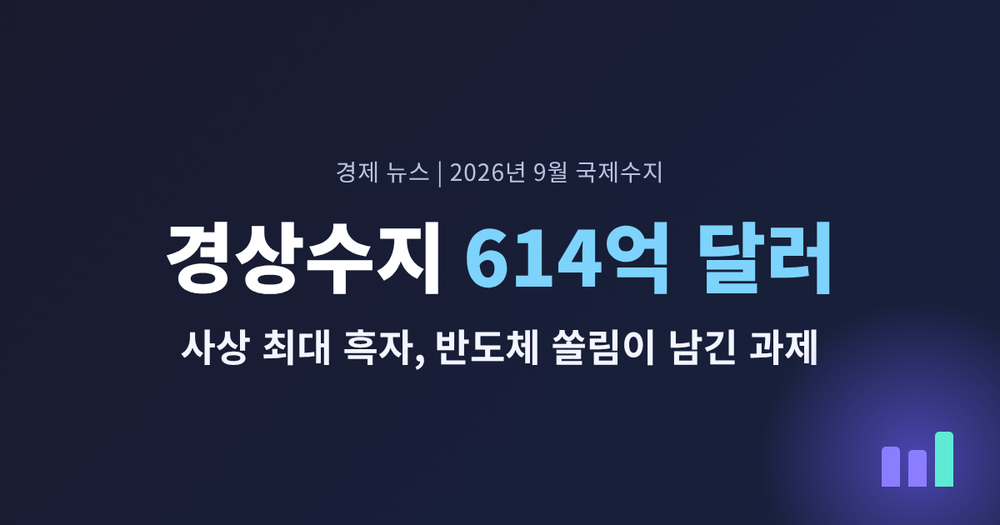
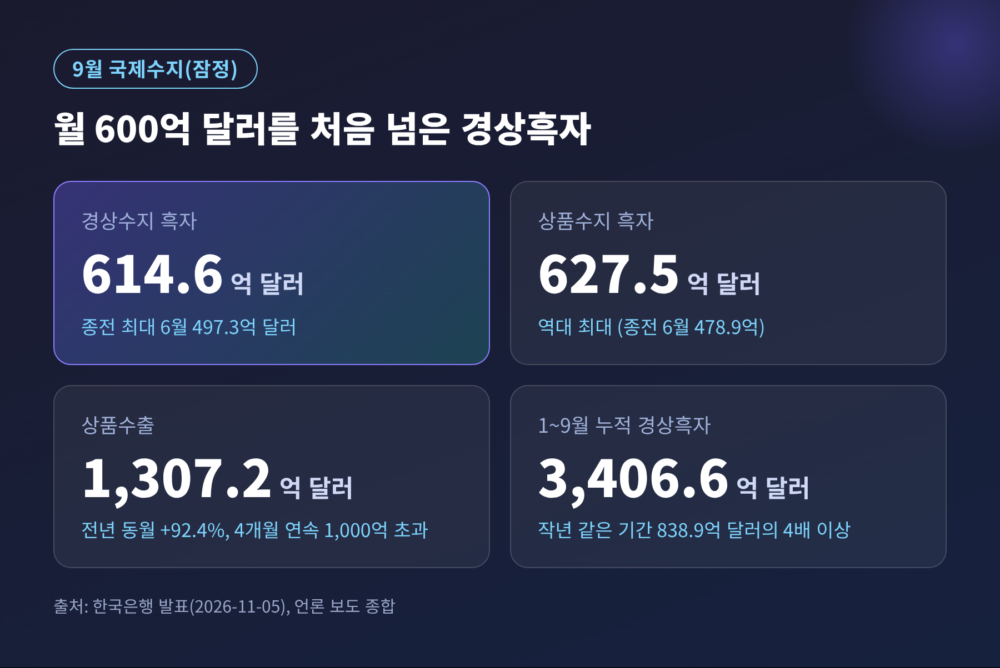
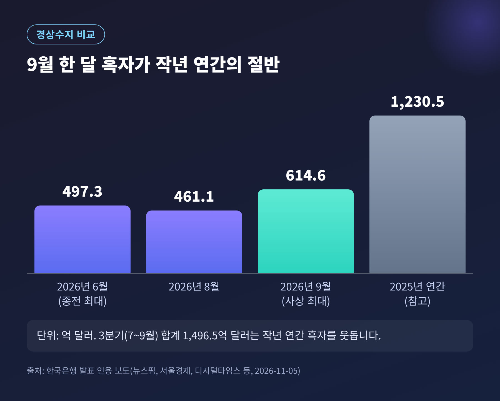
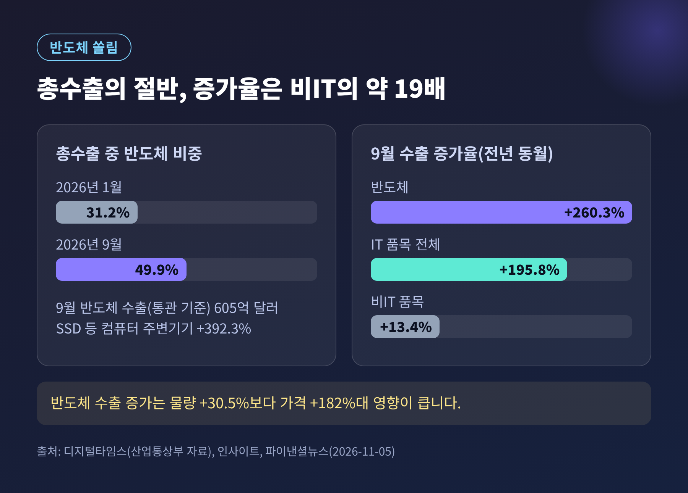
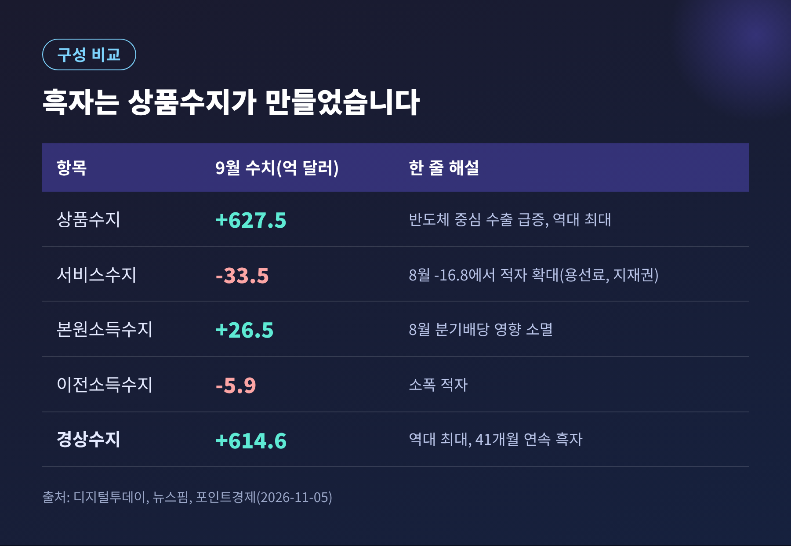
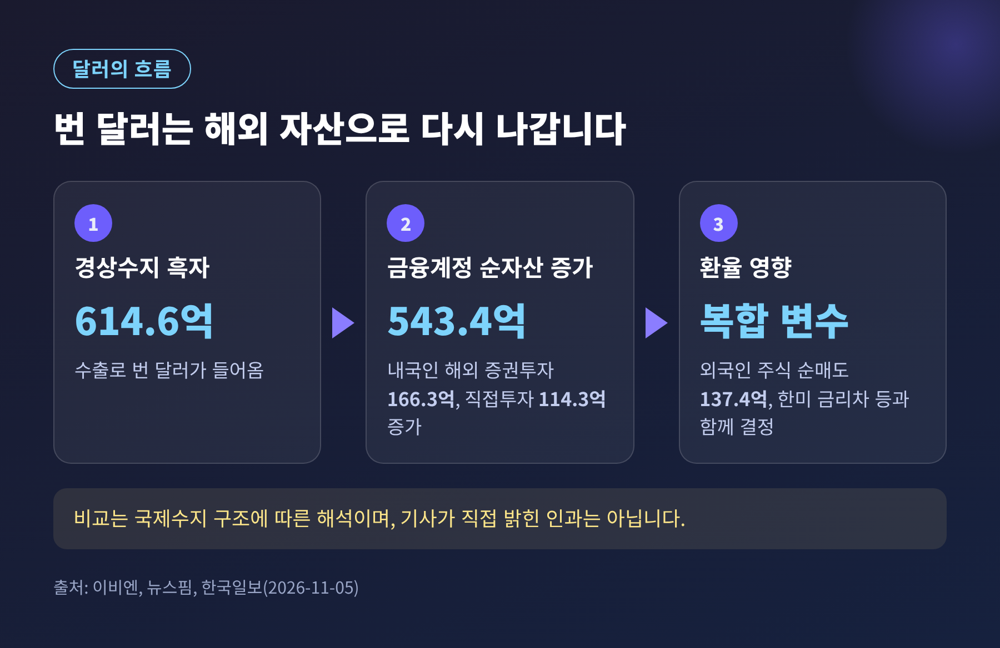
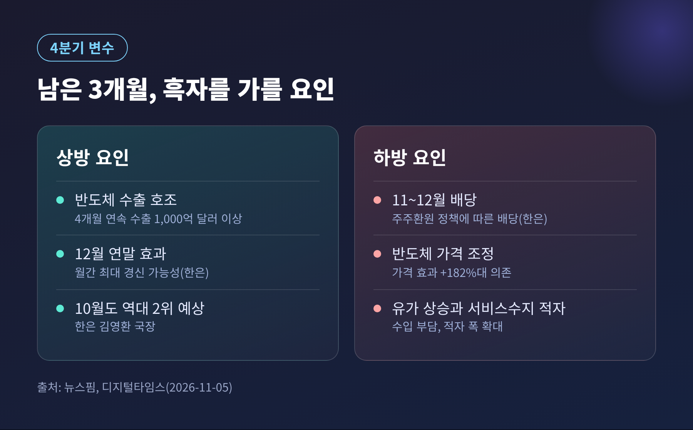

이번 글에서는 11월 5일 한국은행이 발표한 9월 국제수지를 정리해 보려 합니다. 9월 경상수지는 614억 6,000만 달러 흑자로, 월간 기준 처음 600억 달러를 넘었습니다. 숫자의 화려함보다 그 안에 담긴 구성과 앞으로의 변수를 함께 살펴보겠습니다.

한국은행은 11월 5일 「2026년 9월 국제수지(잠정)」를 내놓았습니다. 핵심은 세 가지입니다.
경상수지는 2023년 5월부터 41개월 연속 흑자입니다. 2019년 3월 이후 가장 긴 흑자 행진이기도 합니다.
비교해 보면 규모가 더 실감 납니다. 지난해 연간 경상흑자는 1,230억 5,000만 달러였습니다. 올해는 9월 한 달이 그 절반에 해당합니다. 7~9월 3분기 합계는 1,496억 5,000만 달러로, 작년 한 해 흑자를 이미 웃돕니다.

9월 상품수출은 1,307억 2,000만 달러로 전년 동월보다 92.4% 늘었습니다. 4개월 연속 1,000억 달러 이상이며 역대 최대입니다. 같은 기간 수입은 679억 7,000만 달러로 29.4% 증가했습니다. 수출이 수입보다 훨씬 빨리 늘면서 상품수지 흑자가 커진 구조입니다.
품목별로 보면 쏠림이 분명합니다. 통관 기준으로 반도체 수출은 260.3%, SSD 등 컴퓨터 주변기기는 392.3% 늘었습니다. 반면 IT 품목을 뺀 비IT 품목은 13.4% 증가에 그쳤고, 승용차는 5.6% 줄었습니다.
한국은행 김영환 경제통계1국장은 반도체 수출의 가격 효과를 짚었습니다. 반도체 수출 물량은 30.5% 늘었지만, 가격은 182% 안팎 올랐다는 설명입니다. 산업통상부 자료를 인용한 디지털타임스 보도에 따르면 총수출에서 반도체가 차지하는 비중은 1월 31.2%에서 9월 49.9%로 높아졌습니다.
좋은 점은 분명합니다. 한국 경제가 AI 반도체 호황의 직접적인 수혜를 받고 있다는 사실입니다. 아쉬운 점도 있습니다. 숫자의 상당 부분이 물량이 아니라 가격에서 나왔다는 점입니다. 가격은 오를 때처럼 내릴 수도 있습니다.

9월 수치를 그대로 연간 추세로 읽기는 어렵습니다. 김 국장은 상품수출이 "반도체 수출 호조세에 힘입어 4개월 연속 1000억달러를 상회하는 가운데 분기 말 납품 집중 효과까지 겹치면서 역대 최대를 기록했다"고 설명했습니다. 분기 말에 납품이 몰린 일시적 효과가 포함됐다는 뜻입니다.
서비스수지는 오히려 나빠졌습니다. 9월 서비스수지는 33억 5,000만 달러 적자로, 8월 16억 8,000만 달러 적자의 두 배 수준입니다. 용선료 지급이 늘어 운송수지 흑자가 5억 2,000만 달러에서 1억 3,000만 달러로 줄었습니다. 지식재산권사용료 적자도 3억 9,000만 달러에서 7억 7,000만 달러로 커졌습니다.
본원소득수지는 26억 5,000만 달러 흑자입니다. 8월에 있었던 분기 배당 지급의 계절적 영향이 사라진 결과로, 흑자 규모를 키운 주역은 아닙니다. 다만 한국은행은 이 배당이 이후에는 부담이 될 수 있다고 봅니다.

경상흑자가 사상 최대면 원화가 강해져야 한다고 생각하기 쉽습니다. 그러나 달러는 들어오기만 하지 않고 다시 나가기도 합니다.
9월 금융계정을 보면 내국인이 해외에 가진 순자산이 543억 4,000만 달러 늘었습니다. 역대 최대 증가 폭입니다. 내국인의 해외 증권투자는 166억 3,000만 달러 늘어 역대 두 번째였고, 해외채권은 67억 2,000만 달러로 가장 큰 증가 폭을 기록했습니다. 반대로 외국인은 국내 주식을 137억 4,000만 달러 순매도했고, 매도는 대형 반도체주에 집중됐습니다.
국제수지의 기본 관계로 보면 경상수지로 번 돈은 결국 해외 자산으로 쌓입니다. 614억 6,000만 달러의 흑자와 543억 4,000만 달러의 순자산 증가가 비슷한 규모를 보이는 것은 그 때문입니다. 이는 기사가 직접 밝힌 인과가 아니라 국제수지 구조에 따른 필자의 해석임을 밝혀 둡니다.
한국일보는 원화 강세와 국내 증시 부진 속에 서학개미의 미국 주식·채권 투자가 늘었다고 분석했습니다. 흑자가 곧바로 환율 하락으로 이어지지 않는 이유를 설명하는 단서입니다.
시장의 최근 모습도 참고할 만합니다. 11월 5일 원·달러 환율은 1,342.1원에 마감해 전날보다 0.6원 올랐습니다. 같은 날 코스피는 5.28% 떨어진 5,383.80으로 마감했고, 외국인은 코스피에서 약 3조 4,200억 원을 순매도했습니다. 이투데이는 미국 중간선거 결과로 위험회피 심리가 커진 영향으로 설명했습니다. 경상수지 발표와 이 하락을 인과로 연결한 보도는 없습니다. 같은 날 있었던 별개의 사건으로 보는 편이 정확합니다.

시선은 이제 11월 26일로 향합니다. 한국은행은 올해 마지막 금융통화위원회를 열고, 디지털타임스에 따르면 이날 수정 경제전망도 함께 나올 예정입니다. 기준금리는 현재 연 3.00%입니다. 7월과 8월에 0.25%포인트씩 올린 뒤 10월 22일에 동결했고, 시장은 3.25%로의 인상에 무게를 두고 있습니다.
9월 국제수지는 이 판단에서 성장 쪽 근거를 보강하는 자료입니다. 3분기 실질 GDP는 전기보다 1.0% 성장해 한국은행의 8월 전망치 0.3%를 크게 웃돌았습니다. 4분기 성장률이 0%여도 올해 성장률은 3.6%로 기존 전망 3.3%를 넘는다는 계산이 나옵니다. 다만 민간소비는 0.2% 줄었고, 성장은 반도체 수출과 설비투자가 끌었습니다. 체감과 지표의 거리를 함께 봐야 하는 이유입니다.
물가 쪽은 10월 소비자물가가 2.8%로 한 달 전 2.9%보다 낮아졌습니다. 그러나 근원물가는 2.8%로 시장 예상치 2.7%를 웃돌았습니다. 한미 금리차는 상단 기준 1%포인트가 유지되고 있습니다. 경상수지가 금리 결정의 직접 변수라고 밝힌 자료는 없습니다. 다만 성장과 대외 건전성을 보여주는 배경 지표라는 점은 분명합니다.
한국은행의 연간 경상수지 전망은 8월에 제시한 4,500억 달러입니다. 1~9월 누적이 이미 75.7%에 도달했고, 남은 3개월 동안 월평균 약 365억 달러면 목표를 채웁니다. 신현송 총재도 지난달 기자간담회에서 이를 웃돌 것이라고 말했습니다. 디지털타임스는 최근 3개월 평균 수준이 이어지면 연간 약 4,900억 달러, 월 532억 달러 안팎이면 5,000억 달러를 넘는다고 계산했습니다.
한국은행은 10월 흑자가 9월보다 줄겠지만 역대 두 번째 수준일 것으로 전망했습니다. 12월에는 연말 효과로 월간 최대 기록을 다시 쓸 가능성도 열어 두었습니다. 반면 11~12월 배당은 흑자를 깎는 하방 요인으로 꼽았습니다. 김 국장은 "최근 주주환원 정책에 따른 배당 문제는 하방 요인으로 작용할 것 같다"고 말했습니다.
이 밖에 반도체 가격 조정 여부, 국제유가 상승에 따른 수입 부담, 미국 중간선거 이후의 대외 환경이 변수로 거론됩니다. 비IT 수출이 얼마나 살아나는지도 살펴볼 대목입니다.

정리하면 이렇습니다.
9월 국제수지는 반도체 한 업종이 한국 경제의 대외 성적표를 얼마나 크게 좌우하는지 보여준 숫자입니다. 614억 달러는 자랑할 만한 기록이면서, 동시에 쏠림을 점검해야 한다는 신호입니다.
"기록은 숫자로 남지만, 지속 가능성은 구성이 말해 줍니다."
흑자의 크기보다 그 흑자가 어디서 왔고 어디로 가는지를 보는 일. 11월 26일의 금통위와 수정 전망 앞에서, 독자께서도 이 질문을 함께 품어 보시면 좋겠습니다.
※ 안내: 이 글은 한국은행 발표와 언론 보도를 바탕으로 한 경제 뉴스 해설이며, 투자 권유가 아닙니다. 투자 판단과 그 결과에 대한 책임은 투자자 본인에게 있습니다. 수치는 11월 5일 보도 기준 잠정치이며 이후 달라질 수 있습니다.
출처: 한국은행 「2026년 9월 국제수지(잠정)」 발표를 인용한 파이낸셜뉴스·이비엔·뉴스핌·디지털투데이·디지털타임스·한국일보·서울경제(11월 5일), 이투데이 환율마감(11월 5일), 뉴스1(11월 4일), 한국일보(10월 29일)